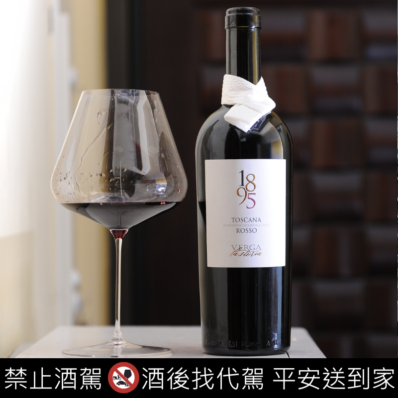
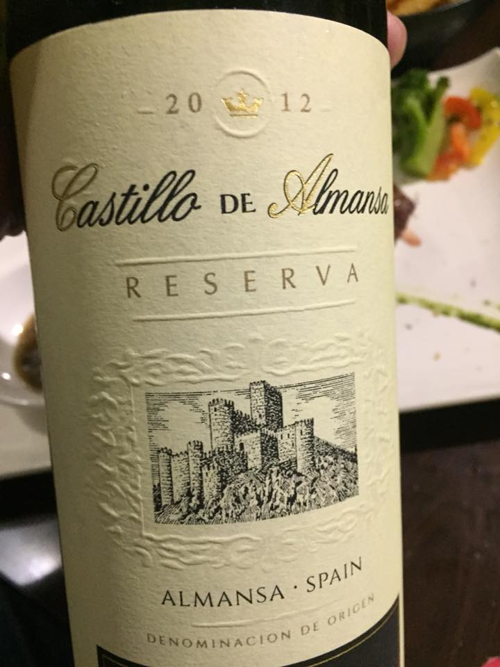
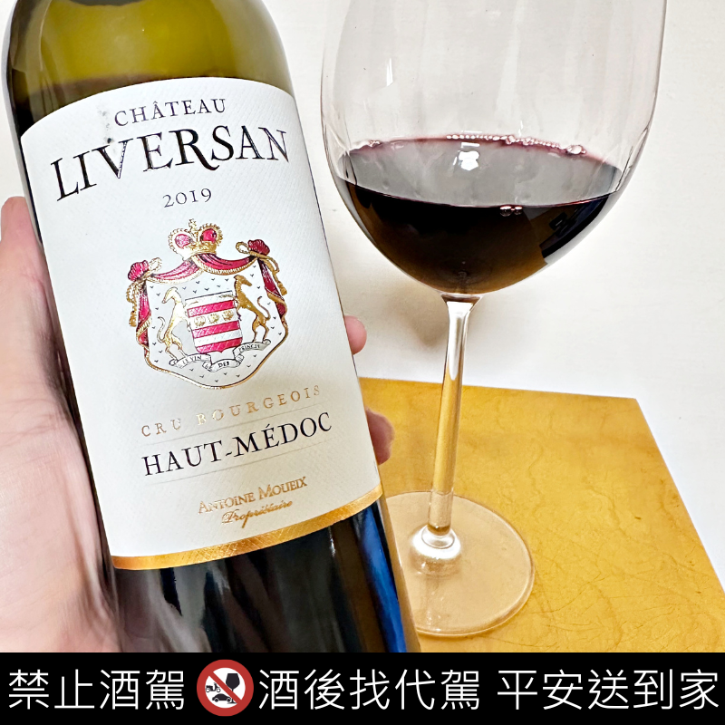
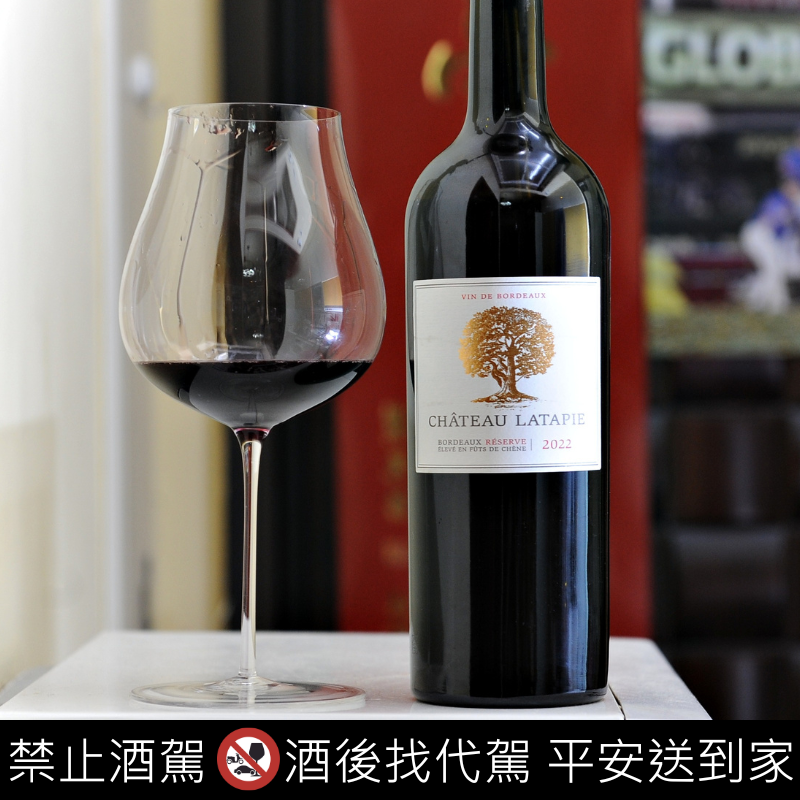
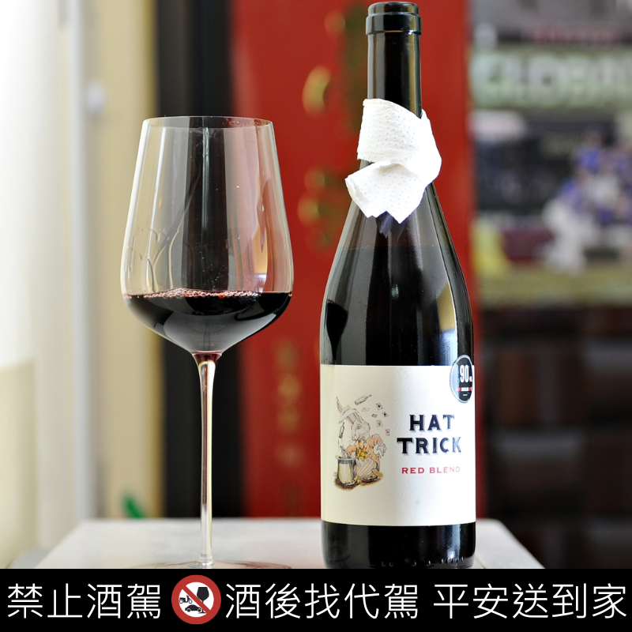
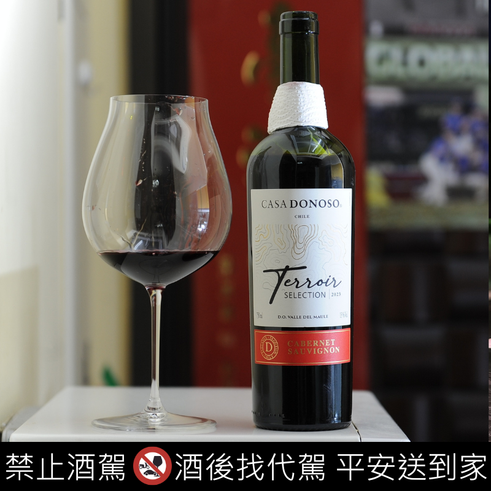
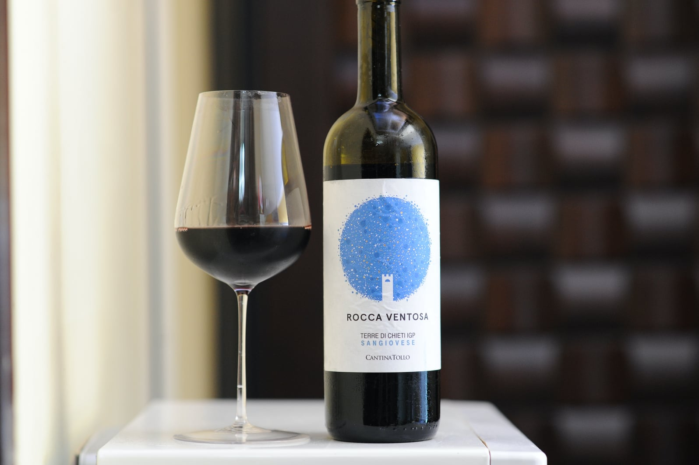
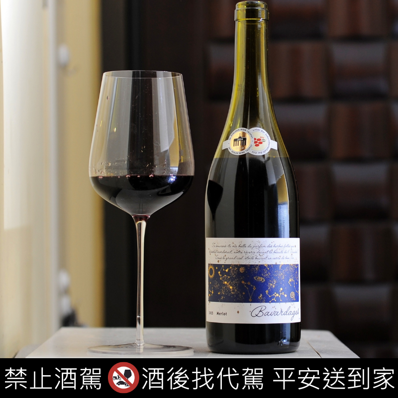
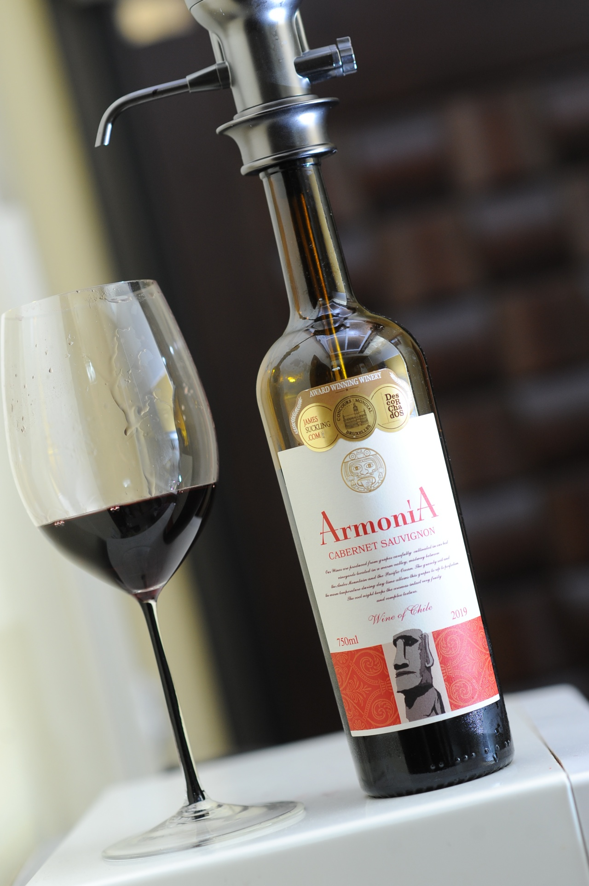
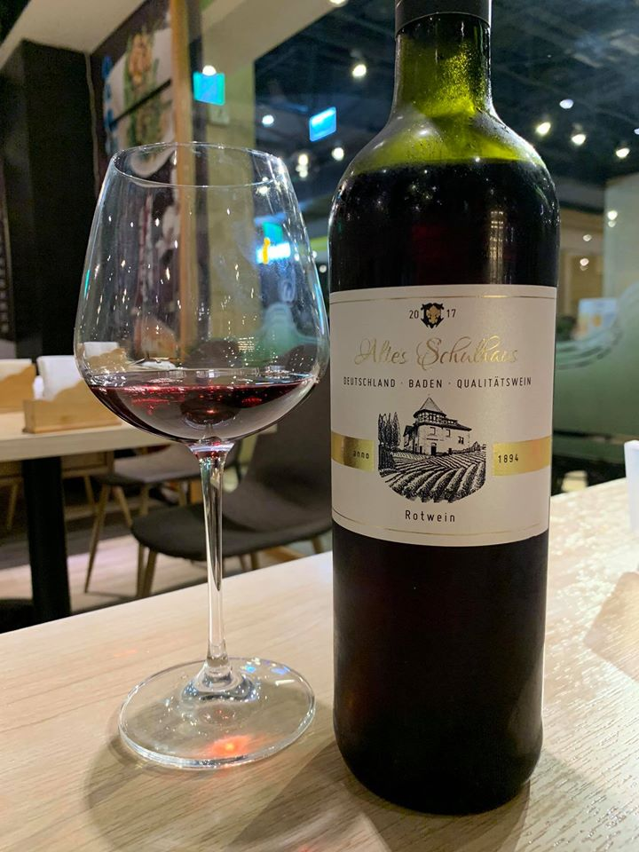

| 賣場 | 酒款 | 國家 | 產區 | 葡萄品種 | 酒精濃度 | 酒莊(廠) | 甜度 | 酸度 | 飽滿度 | 星等 | 參考價 | 圖片 |
|---|---|---|---|---|---|---|---|---|---|---|---|---|
| 全聯 | 1895 Rosso | 義大利 | Toscana | Sangiovese 混合Cabernet and Merlot(100%) | 14% | Verga La Storia | 1/5 | 4/5 | 4/5 | 4.5/5 | $499 |  |
| 美廉社 | Castillo de Almansa Reserva | 西班牙 | Almansa D.O. | Monastrell (50%) ,Tempranillo (30%) ,Garnacha Tintorera (20%) | 14% | Castillo de Almansa | 1/5 | 3/5 | 4/5 | 4.5/5 | $319 |  |
| 全聯 | D.V Catena Historico Malbec | 阿根廷 | Mendoza | Malbec(100%) | 13.5% | D.V Catena | 1/5 | 4/5 | 4/5 | 4/5 | $999 |  |
| 好市多 | Cono Sur Gran Reserva Cabernet Sauvignon | 智利 | Colchagua Valley | Cabernet Sauvignon(90%) ,Syrah (10%) | 10% | Cono Sur | 1/5 | 3/5 | 5/5 | 4/5 | $479 |  |
| 大潤發 | Château Liversan 2019 | 法國 | Haut‑Médoc Cru Bourgeois | Merlot(55%) ,Cabernet Sauvignon (45%) | 13.5% | Château Liversan | 1/5 | 4/5 | 5/5 | 4/5 | $349 |  |
| 好市多 | Château Latapie Réserve 2022 | 法國 | Bordeux | Merlot(80%) ,Cabernet Sauvignon (20%) | 14.5% | Château Latapie | 1/5 | 3/5 | 5/5 | 4/5 | $299 |  |
| 家樂福 | Château Leboscq | 法國 | 法國 | Cabernet Sauvignon(50%) ,Merlot (45%) , Cabernet Franc (3%) ,Petit Verdot (2%) | 13% | Château Leboscq | 1/5 | 4/5 | 4/5 | 4/5 | $229 |  |
| 大全聯 | 1895 Verga La Storia Barolo | 義大利 | Barolo DOCG，Piemonte | Nebbiolo(100%) | 14% | Casa Vinicola Natale Verga | 1/5 | 5/5 | 4/5 | 3.5/5 | $1099 |  |
| 大全聯 | 1895 Primitivo di Manduria DOC | 義大利 | Manduria, Puglia | Primitivo(100%) | 14.5% | Casa Vinicola Natale Verga | 2/5 | 3/5 | 5/5 | 3.5/5 | $649 |  |
| 大潤發 | 1895 Primitivo di Manduria DOC | 義大利 | Manduria, Puglia | Primitivo(100%) | 14.5% | Casa Vinicola Natale Verga | 2/5 | 3/5 | 5/5 | 3.5/5 | $649 | |
| 大潤發 | Chateau Tour de Ségur | 法國 | Lussac Saint-Emilion | Merlot(65%) ,Cabernet Franc (30%) ,Cabernet Sauvignon (5%) | 14% | Chateau Tour de Ségur | 1/5 | 5/5 | 4/5 | 3.5/5 | $599 |  |
| 愛買 | Cono Sur Reserva Especial Cabernet Sauvignon | 智利 | D.O. Valle Del Aconcagua | Cabernet Sauvignon(100%) | 13% | Cono Sur Reserva Especial | 1/5 | 3/5 | 5/5 | 3.5/5 | $559 |  |
| 家樂福 | Dona Flor Vinho Regional Lisboa 2022 | 葡萄牙 | Lisboa | Cabernet Sauvignon、Touriga Nacional（比例未公開）(100%) | 13.5% | Quinta de S. Sebastião | 1/5 | 4/5 | 4/5 | 3.5/5 | $459 |  |
| 家樂福 | Casa Donoso Terroir Selection Cabernet Sauvignon 2023 | 智利 | D.O. Valle del Maule | Cabernet Sauvignon(100%) | 13.5% | Casa Donoso Terroir Selection | 1/5 | 3/5 | 4/5 | 3.5/5 | $399 |  |
| 愛買 | Cantina Tollo Rocca Ventosa Sangiovese | 義大利 | Terre Di Chieti | Sangiovese(100%) | 13% | Cantina Tollo | 1/5 | 4/5 | 4/5 | 3.5/5 | $399 |  |
| 大全聯 | Canaja Gold Rosso Veronese | 義大利 | Veneto | 混釀(100%) | 14% | Villa Annaberta | 1/5 | 3/5 | 5/5 | 3.5/5 | $399 |  |
| 全聯 | Bavardages Merlot | 法國 | PAYS D'OC | Merlot(100%) | 14% | LGI | 1/5 | 4/5 | 4/5 | 3.5/5 | $389 |  |
| 美廉社 | Castillo de Almansa | 西班牙 | Almansa D.O. | Garnacha Tintorera(100%) | 14% | Castillo de Almansa | 1/5 | 3/5 | 4/5 | 3.5/5 | $219 |  |
| 好市多 | Bourgogne Pinot Noir 2024 | 法國 | 勃根地 Bourgogne AOC | Pinot Noir(100%) | 13% | Château de Couches | 1/5 | 3/5 | 5/5 | 3/5 | $439 |  |
| 愛買 | Armonia Cabernet Sauvignon/Merlot | 智利 | Central Valley | Cabernet Sauvignon(100%) ,Merlot (100%) | 13.5% | Sagrada Familia | 1/5 | 3/5 | 4/5 | 3/5 | $369 |  |
| 美廉社 | Altes Schulhaus 艾特舒浩斯 | 德國 | 德國 | Pinot meunier,Regent and Pinot Noir (100%) | 12% | Becksteiner Winzer eG | 3/5 | 3/5 | 2/5 | 2.5/5 | $429 |  |